Torna alla pagina di Elaborazione delle Immagini
:: Appello d'esame di Elaborazione delle Immagini - 11/04/2008 ::
Esercizio 1
In B è rappresentato l’istogramma dell’immagine in A. Commentare l’istogramma dell’immagine e proporre una trasformazione che ne migliori le caratteristiche.
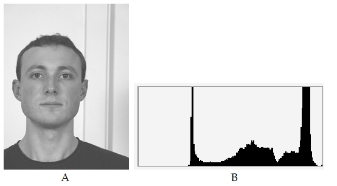
SOLUZIONE
L'istogramma(e quindi l'immagine) ha i valori di intensità che vanno da circa 40 a circa 240, con due picchi proprio in questi due valori. E' presente anche qualche pixel di bianco.
Il picco al livello 40 è dato dalla maglietta, dai capelli e dagli occhi del ragazzo, che sono abbastanza scuri, ma non neri.
Il picco al livello 240 è dato dallo sfondo grigio chiaro, quasi bianco. Lo sfondo è più vasto rispetto alla maglietta del ragazzo infatti il picco è più largo.
I valori intermedi sono dati dal viso del ragazzo e dalla striscia grigia verticale.
I pochissimi valori di bianco presenti sono dati da qualche pixel bianco presente sullo sfondo.
Una trasformazione che migliora l'aspetto dell'immagine è l'equalizzazione dell'istogramma che permette di ottenere un istogramma più plasmato con i livelli di intensità su una gamma più vasta e quindi un miglioramento del contrasto.
Nello specifico il ragazzo risulterebbe più distaccato dallo sfondo; la maglietta, i capelli, il viso e lo stesso sfondo diventerebbero più scuri, con un istogramma con molti più valori sulla sinistra.

Esercizio 2
Data l’immagine C calcolare il risultato dell’operazione morfologica di Apertura utilizzando il seguente elemento strutturante avente come pixel attivo il punto centrale.
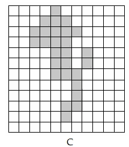
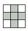
SOLUZIONE
L'Apertura è l'operazione morfologica che consiste nell'applicazione prima dell'erosione e poi della dilatazione del risultato. Lo scopo di questa operazione è quella di rendere più omogenei i contorni di un oggetto ed eliminare le protuberanze sottili e le piccole interruzioni.
Nella fase di erosione l'elemento strutturante deve essere completamente contenuto nell'oggetto e non deve avere quindi elementi in comune con lo sfondo.
L'immagine dell'esercizio la consideriamo binaria: i quadrati grigi con valore 1 e quelli bianchi con valore 0.
Dall'operazione di erosione otteniamo il seguenti risultato:
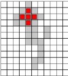
Sono stati eliminati gli oggetti (o le protuberanze) più piccoli dell'elemento strutturante.
La fase di dilatazione serve per accrescere o ispessire gli oggetti in un'immagine binaria, ovviamente in base alla forma dell'elemento strutturante. In questo caso è sufficiente che l'elemento strutturante ricopra almeno un punto dell'oggetto, non deve essere completamente contenuto come nel caso dell'erosione.
Il risultato finale quindi sarà:
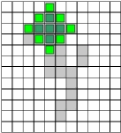
Tutta la parte inferiore viene eliminata, in quanto più piccola dell'elemento strutturante.
Esercizio 3
In Figura D è mostrata una immagine che viene successivamente elaborata. L’immagine subisce separatamente un filtraggio (a) Passa Alto (b) Passa Basso Verticale (c) Passa Basso Orizzontale.
Associare correttamente le immagini (E,F,G) risultato di ogni singolo filtraggio al relativo filtro descritto, giustificando le varie scelte.
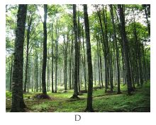
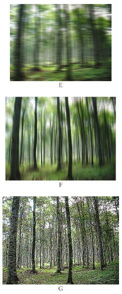
SOLUZIONE
filtraggio passa alto:
figura G
filtraggio passa basso verticale:
figura F
filtraggio passa basso orizzontale:
figura E
I filtri di smoothing (passa basso) e sharpening(passa alto) sono utilizzati sia nel dominio spaziale sia nel dominio della frequenza.
Nel dominio spaziale le operazioni vengono svolte direttamente sui pixel dell'immagine; mentre nel dominio della frequenza prima di tutto bisogna calcolare la trasformata di Fourier per passare al dominio della frequenza, effettuare il filtraggio e poi tramite il calcolo dell'antitrasformata ritornare nel dominio spaziale.
Vediamo le caratteristiche principali dei filtri passa basso e passa alto nel dominio della frequenza:
Lo scopo del filtraggio passa basso e' quello di abbassare le alte frequenze presenti nell'immagine, quindi sfocarla. La presenza di alte frequenze e' dovuta ai contorni e alle transizioni di intensita' piu nette, come il rumore.
Un filtro passa basso ideale lascia passare, senza attenuarle, tutte le frequenze all'interno di un cerchio di raggio D0 e taglia fuori tutte le frequenze al di fuori del cerchio.
I tre principali tipi di filtri passa basso sono
- ideale
- di Butterworth (e' una via di mezzo tra gli altri due)
- gaussiani
Per quanto appena detto alle immagini F ed E e' stato sicuramente applicato un filtro passa basso in quanto sono piu' sfocate rispetto all'originale.
Alla figura E e' stato applicato il filtro passa basso orizzontale perche' si vedono proprio delle linee orizzontali sfocate, mentre nella figura F si vedono delle linee verticali.
I filtri di sharpening (passa alto) attenuano le componenti a bassa frequenza, che corrispondono alle lente variazioni di intensita' nell'immagine, senza disturbare le frequenze piu alte nella trasformata di Fourier. Quindi quando il filtro passa basso filtra le frequenze, il filtro passa alto le lascia passare, e viceversa.
Per quanto appena detto all'immagine G e' stato sicuramente applicato un filtro passa alto.
Esercizio 4
Data l’immagine raffigurata in H. Calcolare l’immagine filtrata servendosi di un filtro mediano su di una finestra 2x2
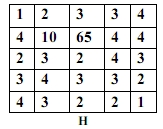
SOLUZIONE
Filtrando l'immagine con un filtro mediano 2x2 otteniamo:
2 3 3 4 0
3 3 4 4 0
3 3 3 3 0
3 3 2 2 0
0 0 0 0 0
Non sono sicuro al 100% della correttezza di questo esercizio.
Però il risultato ha senso perché vengono eliminati quei due punti con intensità elevata (10 e 65) che sarebbero comparsi come due punti chiari nell'immagine e molto differenti dal loro intorno.
Il risultato rispecchia lo scopo del filtro mediano, che è quello di forzare i pixel a mantenere il livello di intensità simile a quello dell'intorno, quindi i pixel isolati chiari o scuri rispetto ai loro vicini vengono eliminati. Ricordiamo che il filtro mediano è molto potente nel caso di rumore casuale sale e pepe.
Esercizio 5
- Definire la trasformata di Fourier di una immagine.
- Indicare che cosa si intende per teorema della convoluzione e quali vantaggi abbia nell’ambito dell’elaborazione delle immagini.
- Che cosa è il fenomeno dell’aliasing?
SOLUZIONE
1- La trasformata di Fourier in generale è quella trasformata che ci permette di passare dal dominio spaziale al dominio della frequenza e poter effettuare delle operazioni che altrimenti non sarebbero applicabili. La trasformata di Fourier può essere di una funzione continua monodimensionale, ma nel nostro caso siccome lavoriamo su immagini digitali e quindi valori discreti utilizziamo la DCT trasformata discreta di Fourier bidimensionale.
L'espressione che caratterizza la trasformata discreta di Fourier è la seguente:
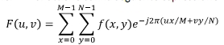
dove f(x,y) è l'immagine digitale di dimensioni MxN.
I due concetti fondamentali legati alla trasformata sono quelli dell'impulso e della proprietà di sifting:
L'impulso discreto 2-D è definito
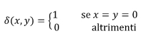
mentre la proprietà di sifting, che ci da il valore della funzione discreta f(x,y) nella posizione dell'impulso, è
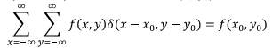
Questi concetti sono importanti perché per poter effettuare il campionamento bidimensionale è necessario utilizzare un treno di impulsi 2-D, cioè un insieme di impulsi periodici che si estendono all'infinito lungo i due assi.
Gli intervalli di campionamento nel dominio della frequenza sono inversamente proporzionali sia alla distanza tra i campioni spaziali che al numero di campioni stessi; quindi maggiori sono i campioni e le distanze tra i campioni nel dominio spaziale, minori saranno le distanze tra i campioni nel dominio della frequenza.
Nel calcolo della trasformata le due componenti che sfruttiamo per effettuare filtraggi e analisi visive sono lo spettro e l'angolo di fase, che rispettivamente contengono le informazioni riguardanti le intensità dell'immagine il primo e la forma, la posizione degli oggetti il secondo. Una rotazione dell'immagine provoca la rotazione dello stesso angolo anche dello spettro, mentre la traslazione non lo influenza.
Per un'analisi visiva migliorata è necessario moltiplicare l'immagine originale per (-1)x+y prima di calcolarne la trasformata per fare in modo di centrare lo spettro in (M/2; N/2).
2- Il teorema della convoluzione è diviso in due parti:
prima parte: la trasformata di Fourier della convoluzione di due funzioni nel dominio spaziale è uguale alla moltiplicazione tra le trasformate delle due funzioni nel dominio della frequenza. L'antitrasformata della moltiplicazione di due funzioni nel dominio della frequenza ci da la convoluzione delle due funzioni nel dominio spaziale.
Nel caso monodimensionale quindi:
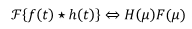
La parte di sinistra può essere ricavata dalla parte di destra e viceversa.
seconda parte: la trasformata di Fourier della moltiplicazione di due funzioni nel dominio spaziale è uguale alla convoluzione tra le trasformate delle due funzioni nel dominio della frequenza. L'antitrasformata della convoluzione di due funzioni nel dominio della frequenza ci da la moltiplicazione delle due funzioni nel dominio spaziale.
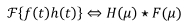
Per il caso bidimensionale è sufficiente aggiungere una variabile, ma i concetti sono gli stessi.
Questo teorema è alla base del filtraggio nel dominio della frequenza, perché ci permette di utilizzare il dominio della frequenza come laboratorio in quanto ci permette di effettuare delle operazioni nella frequenza che nel dominio spaziale non sono realizzabili. Quindi ci è possibile effettuare degli esperimenti nel dominio della frequenza (in quanto computazionalmente risulta meno pesante) e successivamente implementare il metodo nel dominio spaziale.
3- L'aliasing o aliasing della frequenza è un processo in cui le componenti ad alta frequenza di una funzione continua, si mascherano alle frequenze più basse nella funzione campionata. Quando è presente aliasing l'antitrasformata di Fourier introduce degli errori perché si verifica una sovrapposizione dei periodi che non permette di isolare un singolo periodo della trasformata, tutto ciò avviene perché c'è un abbassamento del tasso di campionamento sotto quello di Nyquist. La frequenza di Nyquist equivale esattamente al doppio della frequenza più alta.
Questi concetti legati all'aliasing si riferiscono sia al caso monodimensionale che a quello bidimensionale (cioè il nostro), l'unica differenza è che nel caso bidimensionale la frequenza di campionamento minima, per evitare errori nella ricostruzione e per avere periodi isolati e non sovrapposti, deve essere mantenuta su entrambi gli assi.
Nelle immagini l'aliasing si può presentare come aliasing:
- spaziale: è dovuto ovviamente al sottocampionamento e si presenta come linee frastagliate e sui contorni ben definiti come blocchi jaggy.
- temporale: legato agli intervalli temporali tra immagini in sequenza. Ad esempio l'effetto wagon wheel, nel quale le ruote con i raggi sembrano ruotare all'indietro perché il valore del frame rate è troppo basso rispetto alla velocità di rotazione della ruota nella sequenza.
Torna alla pagina di Elaborazione delle Immagini